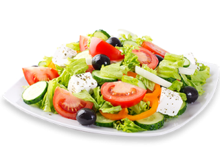

Salad

A fresh and healthy salad made with crisp vegetables and a light dressing.
This salad combines colorful vegetables and simple seasoning for a refreshing side dish or light meal.
It is easy to prepare and can be customized with your favorite toppings.
Ingredients:
- 4 cups mixed greens
- 1 cup cherry tomatoes, halved
- 1 cucumber, sliced
- 1/2 red onion, thinly sliced
- 1/4 cup feta cheese
- 2 tablespoons olive oil
- 1 tablespoon lemon juice
- Salt and pepper to taste
Steps:
- Place mixed greens in a large bowl.
- Add cherry tomatoes, cucumber, and red onion.
- Sprinkle feta cheese over the salad.
- In a small bowl, whisk together olive oil, lemon juice, salt, and pepper.
- Pour the dressing over the salad and toss gently to combine.
- Serve immediately or chill briefly before serving.